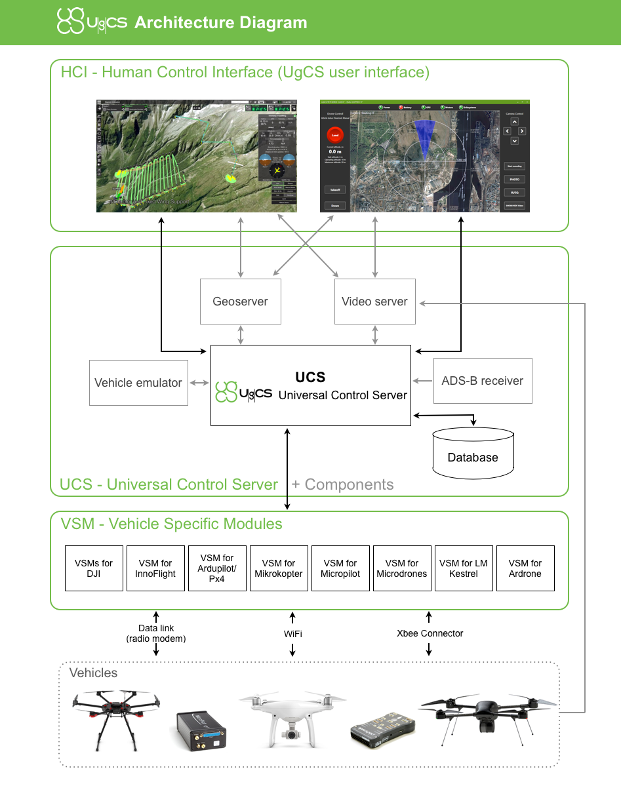

UgCS is an easy to use desktop ground station software, enabling central management of almost any drone on the market. Besides having many out-of-the-box features, UgCS is built as a flexible platform that can be enriched with third party components or incorporated into complex solutions, like broadcast telemetry to cloud storage or create a light-show with a fleet of drones. Starting from UgCS version 2.10 the .Net SDK is available, that enables custom client applications (HCI in the UgCS architecture diagram) built on C# to interact with UgCS's Universal Control Server (UCS).
